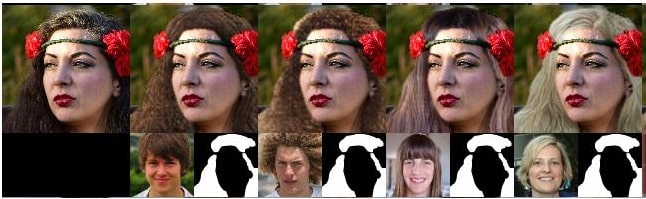

Muhammed Pektaş

I'm a PhD student at University of Bakircay Computer Engineering department under the supervision of
Assoc. Prof. Deniz KILINÇ.
In addition, I'm a Computer Vision Researcher at Syntonym. In Syntonym, We develop facial anonimization technology by
replacing faces with non-existed ones without losing facial metrics. To active this goal, I do
research about diverse topics such as GANs, Face Detection, Recognition and Tracking, Model
Compression etc. I also working on preparing experimental models to production. In addition, I have
a Computer Engineering BSc. and MSc. degree. My BSc. degree from Konya
Technical University advised by Prof. Dr. Erkan
Ülker and MSc. degree from
University of Ege advised by Prof. Dr. Aybars Uğur.
My main research goal is to develop and discover more smart methods than existing smart methods in
Artificial Intelligence. Until nowedays, I worked on problems that in intersection of Machine
Learning and Computer Vision.
| September 2022 - I started to PhD at Univesity of Bakircay Computer Engineering Department. |
| January 2022 - I graduated MSc from Univesity of Ege Computer Engineering Department. |
| November 2019 - I started to work as Computer Vision Researcher in Syntonym. |
| September 2019 - I started to MSc. in Computer Engineering Department at Univesity of Ege. |
| June 2019 - I graduated BSc from Konya Tecnical University as a Computer Engineer. |
| Januery 2014 - I start to study Computer Engineering at Konya Tecnical University. |
Efficient Hair Style Transfer with Generative Adversarial Networks
Muhammed Pektas, Baris Gecer, Aybars Ugur Arxiv Github |
Realistic Hair Synthesis with Generative Adversarial NetworksMuhammed Pektas, Aybars Ugur - Master Thesis Arxiv Yöktez |